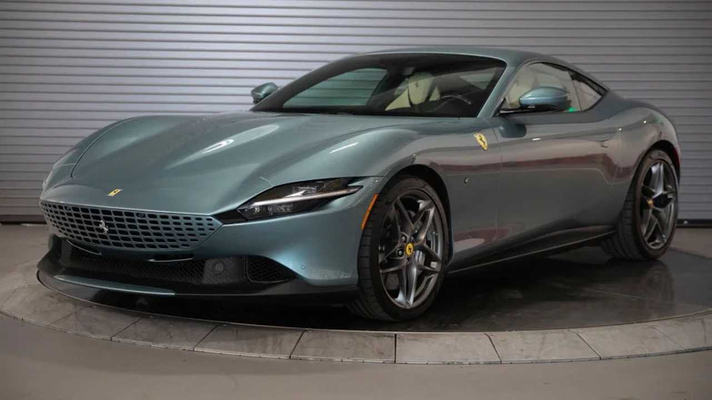

LAMBORGHINI
![The Revuelto is the beginning of a new era for Lamborghini,
who has harnessed the power of hybridization technology to create the first HPEV (High Performance Electrified Vehicle).
Responding to the need for sustainability and powerful performance,
the Lamborghini Revuelto rewrites all paradigms and represents a technical masterpiece beyond anyone’s imagination.
The iconic V12 engine finds a new life in this futuristic automotive masterwork that delivers unparalleled performance and driving emotions.](revuelto.jpg)
×

![From our past, we've learned perfection. This is how the first model of the Lamborghini Huracán was born.
More performance, more control, more innovation.
The Huracán is equipped with a powerful V10 engine and the latest technologies to perform at its absolute best.
Engineered to guarantee the best performance and control under any driving condition,
it's easy to take to the limit, not to mention extremely fun,
thanks to technology like the Lamborghini Doppia Frizione (LDF) dual clutch gearbox and the electronically-controlled four-wheel drive.
Enjoy the best driving experience, ever. Discover all the Lamborghini Huracán models.](huracan.jpg)
×

![Lamborghini Urus is the world’s first Super Sport Utility Vehicle, in which luxury,
sportiness and performance meet comfort and versatility. It offers best-in-class driving dynamics,
alongside its unmistakable elegance of design. Urus embodies the characteristics of multiple souls: sporty,
elegant and off-road, and has a suitability for everyday driving in a range of environments.
With its surprisingly distinct engine sound, combined with high performance, Lamborghini Urus is anything but typical.](urus.jpg)
×

FERRARI
![As the Prancing Horse’s first production plug-in hybrid spider,
the SF90 Spider sets new performance and innovation benchmarks not only for the marque’s range,
but for the entire sports car sector. The new convertible has the same extreme supercar specification
and record-breaking performance as the SF90 Stradale yet also adds further driving pleasure and versatility to the mix,
thanks to the latest iteration of Ferrari’s signature Retractable Hard Top architecture.
This makes the SF90 Spider the ideal car for owners that demand the very pinnacle of Ferrari technology,
but still want the thrill and versatility of open-top driving.](sf90.jpg)
×


Revuelto
×

![At the 1967 24 Hours of Daytona, Ferrari took the top three places in the first round of the International World Sports Car Championship.
The 330 P3/4, 330 P4 and 412 P that famously shot past the chequered flag side by side perfectly encapsulated the spirit of the sports prototypes
of the 1960s, a decade now considered the golden era of closed wheel racing. The Ferrari Daytona SP3,
the second car to join the limited edition Icona series,
pays homage to the mid-rear-engined Ferrari V12 sports prototypes that earned the marque its unparalleled motor sport status.](daytona.jpg)
×